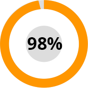
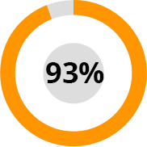

80% dintre oamenii din lume suferă de probleme articulare!
Nici măcar experții nu cunosc toate cauzele durerii articulare. Cauza principală este considerată a fi o defecțiune a sistemului imunitar. Cu toate acestea, există o serie de factori care cresc riscul de dezvoltare și progresie a bolilor articulare:
- modificări legate de vârstă;
- infecții cauzate de diferite viruși și bacterii;
- tulburări metabolice;
- leziuni;
- deficit de vitamine;
- probleme ale sistemului nervos central;
- scăderea imunității;
- alimentație proastă;
- supraponderali;
- perturbarea reglării sistemului endocrin;
- predispoziție genetică;
- hipotermie.
„A scăpa de durerile articulare rapid și fără a vă afecta sănătatea este reală”
Potrivit statisticilor, peste 80% dintre oameni din lume au probleme articulare. Cel mai rău lucru este că bolile articulare duc la paralizie și dizabilități. Astăzi, există o singură soluție diferită de toate cele care există astăzi. Acesta este Ostedin.
Ostedin se bazează pe ingrediente vegetale care ajută la activarea puterilor naturale ale organismului și la inițierea procesului de auto-vindecare. Toate componentele acționează sinergic, completându-se și îmbunătățindu-și reciproc efectele. Utilizarea regulată a Ostedin ajută la ameliorarea durerilor articulare.
Profesor Alexandru Rosioru, artrolog de cea mai înaltă categorie, dr.,
naturopat.
Experienta in munca: 26 ani.
Formular de solicitare
Ostedin are un efect complex asupra organismului.
Compoziția produsului se bazează pe componente naturale care promovează un efect cuprinzător asupra cauzei problemei fără a masca simptomele.
Componentele au activitate biologică ridicată, proprietăți antiinflamatorii și analgezice. Ostedin are și un efect vasoprotector.
Cum ajută Ostedin 2500 de oameni?
Centrele internaționale de cercetare în domeniul combaterii bolilor articulare au efectuat o serie de studii clinice și studii fundamentale ale Ostedin pe o perioadă de șase luni. Cercetarea a implicat 2.500 de voluntari.
Rezultatele testelor au arătat:


Prin ce diferă Ostedin de alte produse?
Formular de solicitare
Aprecierile persoanelor care deja au utilizat Depanten
Întrebări frecvente de la clienții noștri
-
Mă doare articulația șoldului. Îmi va ușura Ostedin durerea fără să-mi afecteze sănătatea?Ostedin ajută la ameliorarea durerii fără efecte secundare, deoarece toate componentele au fost testate în centru pentru combaterea problemelor articulare. Testele nu au evidențiat niciun element chimic care ar putea provoca cel mai mic rău sănătății.
-
Cum ajută Ostedin cu osteoartrita articulațiilorOstedin ajută la ameliorarea durerii datorită unei combinații de ingrediente unice. Cu utilizarea regulată, Ostedin ajută la inițierea procesului de autovindecare al articulațiilor și cartilajelor cu ajutorul unei formule unice brevetate.
-
Sunt alergic la majoritatea alimentelor. Ostedin are contraindicații și efecte secundare?Produsul se bazează pe componente ale plantelor atent selectate de oamenii de știință. Au trecut toate studiile clinice, care au implicat 2.500 de oameni. Niciuna dintre ele nu a avut efecte secundare sau reacții alergice.
-
Tatăl meu are artrită. Mă dor degetele și mor. Îl va ajuta Ostedin?Ostedin ajută în lupta împotriva diferitelor stadii ale artritei datorită unei combinații unice de componente rare. Produsul ajută la artrita și artroza articulației cotului, articulațiilor degetelor de la picioare, articulațiilor umărului și genunchiului.
-
Vă rugăm să ne spuneți cum diferă Ostedin de alte produse?Ostedin conține ingrediente unice. După experimente pe termen lung, oamenii de știință de la Centrul Internațional de Cercetare pentru Boli Articulare au adăugat componente extrem de rare la Ostedin, care ajută la inițierea procesului de regenerare a țesuturilor deteriorate din organism, fără a dăuna sănătății.
-
Cât timp trebuie să folosesc Ostedin pentru ca durerea și roșeața să dispară?Ostedin trebuie utilizat conform instrucțiunilor. Este foarte important să nu pierdeți o singură zi pentru a obține efectul maxim. Urmând instrucțiunile de utilizare a Ostedin, vă puteți ajuta în lupta împotriva durerii și a inflamației. Pentru a ajuta la refacerea articulațiilor și a țesutului cartilajului, este necesar să finalizați cursul complet.
-
Cât timp poate fi păstrat Ostedin?Data de expirare a Ostedin este indicată pe ambalaj. Produsul trebuie păstrat la temperatura camerei, evitând lumina directă a soarelui.
-
Cum se utilizează corect Ostedin?Este necesar să urmați instrucțiunile indicate pe ambalaj, precum și recomandările managerului care vă va contacta după comandarea produsului pe acest site.
Cum se utilizează Ostedin?
Dacă suferiți de dureri articulare, începeți azi să utilizați Ostedin!
Produsul te ajuta sa revii la viata normala in cateva minute!
Cu cât amânați mai mult timp, cu atât aveți mai puține șanse de a scăpa de durerile articulare! În fiecare zi devine din ce în ce mai greu să suporti durerea insuportabilă! Merită să așteptați până când procesul devine ireversibil dacă problema poate fi rezolvată?
Ostedin este disponibil în cantități limitate. Următoarea parte va intra în vânzare în nu mai puțin de 6 luni!